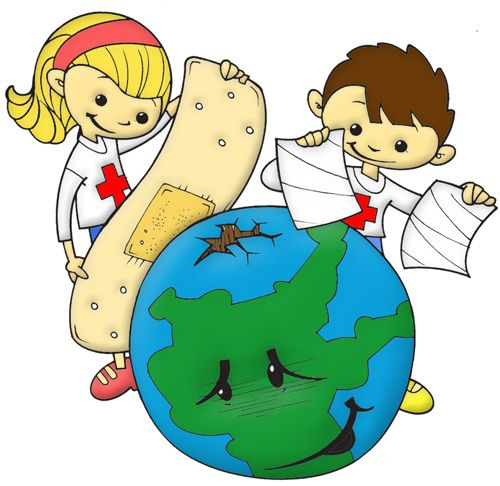

Día Internacional de la Madre Tierra 22 de abril


- 

Realizado por:
LAURA BAROJAS ARIAS
4° Semestre Grupo: "E"
Especialidad
Programación
Submódulo
Desarrolla Aplicaciones Móviles
Docente:
Lic. Jóse Antonio Gómez Hernandez


4° Semestre Grupo: "E"
Programación
Desarrolla Aplicaciones Móviles
Lic. Jóse Antonio Gómez Hernandez
Celebramos el Día Internacional de la Madre Tierra psra recordar que el planeta y sus ecosistemas nos dan la vida y el sustento.Con este día, asumimos demás, la responsabilidad colectiva, como nos recordaba la Declaración de Río de 1992, de fomrntar esta armonia con la naturaleza y Madre Tierra.
Este día nos brinda también la oportunidad de concienciar a todos los habitantes del planeta acerca de los problemas que afectan a la Tierra y a las diferentes formas de vida que en él se desarrollan.
En 1970 se instituyó en Estados Unidos el Día Tierra, un año después de que se registrara un devastador derrame petrolero en las costas de Santa Bárbara, California, con la consecuente protesta de activistas y en especial un senador de la época, Gaylord Nelson, que en compañía de ciudadanos y organizaciones realizó una intensa campaña en pro de la protección del medio ambiente.
Casi 20 años después, esta efeméride alcanzó dimensiones mundiales cunado la Organización de las Naciones Unidas (ONU), en el marco de una reunión sostenida en Rio de Janeiro en 1992, instituyó con beneplácito de las más de 100 naciones participantes, el 22 de abril como Día Internacional de la Madre Tierra, el Día de la Tierra nos puede servir para reflexionar sobre la mejor manera de conjuntar saberes y técnicas, pensarlos y ejercerlos de manera tal que el impacto sobre nuestro entorno sea, en la medida de nuestro alcance, positivo. El Día de la Tierra nos puede servir para reflexionar sobre nuestro consumismo ―material pero quizá también espiritual.
La Madre Tierra es una expresión común utilizada para referirse al planeta Tierra en diversos países y regiones, lo que demuestra la interdependencia existente entre los seres humanos, las demás especies vivas y el planeta que todos habitamos.
Se puede decir que desde el establecimiento del Día de la Tierra en 1970 el activismo ecológico comenzó a ganar más y más espacio en los diferentes espacios públicos. Hoy en día, la reflexión sobre el cuidado del medio ambiente generada por el acto impacto que las actividades humanas han tenido sobre el mismo es central no sólo en términos del público general si no también en las agendas de los grandes políticos. El Día de la Tierra se organiza con mucha anterioridad y actualmente posee una bandera y una simbología específica que sirven para reconocer uno de los días más importantes para el mundo entero.
El Día de la Tierra no es sin embargo un día en el que se realizan actos conmemorativos y simbólicos simplemente. Por el contrario, es un día en el cual se insta a todos lo ciudadanos y, especialmente, a los diferentes gobiernos, a tomar actitudes más ecológicas y a preservar el medio que nos rodea.


El 23 de abril de 2018 se realizó en la sede de las Naciones Unidas en Nueva York, el 8° Diálogo Interactivo sobre Armonía con la Naturaleza, en ocasión de la conmemoración del Día Internacional de la Madre Tierra.El evento fue convenido por el Presidente de la Asamblea General, Miroslav Lajcak, quien destacó la importancia del Diálogo para intercambiar ideas sobre desarrollo y patrones de producción y consumo sostenibles en armonía con la naturaleza.Durante la jornada, se discutió sobre cómo los marcos legales y económicos de la Jurisprudencia de la Tierra impactan la implementación de patrones de producción y consumo sostenibles en Armonía con la Naturaleza.El Diálogo se realizó con el objetivo de inspirar a los ciudadanos y las sociedades a reconsiderar la relación que mantienen con la naturaleza, acorde a la meta 12.8 de los Objetivos de Desarrollo Sostenible con respecto a los patrones de consumo y producción sostenibles.Mejorar la base ética de la relación entre la especie humana y la Tierra en el contexto del desarrollo sostenible no es solo beneficioso, sino también necesario.
El paquete de medidas estratégicas diseñado por el quinteto de organizaciones ecologistas está compuesto por 17 demandas que abarcan medidas transversales que trascienden el medioambiente y van más allá con el fin de facilitar la transformación de todo el sistema.
En concreto, tal y como anunciaron los responsables de estas ONG durante la presentación de Un programa por la Tierra. Demandas para una legislatura sostenible, lo que defienden con estas 17 propuestas es lograr que la «sostenibilidad del modelo económico, las políticas centradas en la justicia social y ambiental y las medidas para generar un nuevo modelo de producción y consumo, con generación de empleo ligado al cuidado y mejora ambiental» marquen el camino en la nueva etapa política.